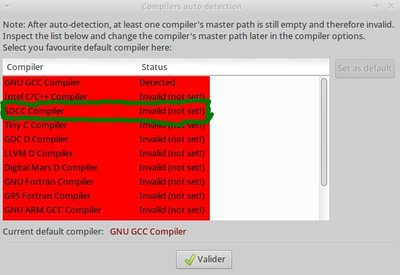
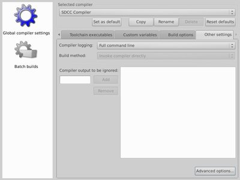
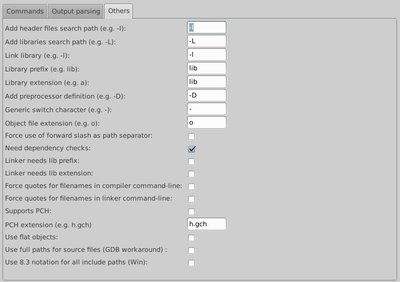
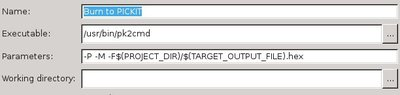
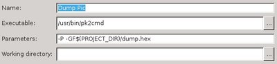

Installation du programmateur
Il faut installer le petit outil qui utilisera le programmateur pickit2. Pour installer pk2cmd, il vous faut modifier vos sources de logiciels depuis le dépôt Urriellu
Commencez par éditer /etc/apt/sources.list
sudo nano /etc/apt/sources.list
Ajoutez la ligne suivante :
deb http://deb.urriellu.net/ any main
Quittez l’éditeur en faisant ctrl+x, puis en répondant O (ou Y) et [entrée]
Installez :
sudo apt-get update
sudo apt-get install urriellu-keyring
sudo apt-get update
sudo apt-get install pk2cmd
Premier test
Nous allons tester cette première installation. Notez que la commande pk2cmd ne prend que des chemins absolus en entrée. Commencez par télécharger le fichier suivant:
Décompressez-le:
tar xzf chenille.tar.gz
Envoyez-le vers votre PicKit2:
pk2cmd -P -M -F/chemin_absolu_vers_mon_fichier/chenille.hex
Vous devriez avoir une réponse du genre:
Auto-Detect: Found part PIC18F4550.
PICkit 2 Program Report
19-4-2013, 14:43:18
Device Type: PIC18F4550
Program Succeeded.
Operation Succeeded
Branchez votre PIC sur votre platine de test et envoyez la sauce ! Le port D devrait se comporter comme la voiture de K2000. Il est possible que ça ne démarre pas; j’ai souvent des faux-contacts. Il faut faire bouger le composant sur son support, et il finit par démarrer.
Installer le compilateur
Nous allons installer SDCC dans sa version 3. Soit vous installez depuis les dépôts, soit depuis les sources pré-compilées.
Depuis les dépôts
Commencez par vérifier la version de SDCC sur les dépôts en tapant la commande suivante:
apt-cache show sdcc | grep Version
Si la version est au moins la 3, vous pouvez continuer, sinon, installez depuis les sources pré-compilées.
sudo apt-get install sdcc
Depuis les sources pré-compilées
Rendez-vous sur la page de téléchargement de sdcc et téléchargez l’archive. Décompressez
cd /tmp
sudo tar xjf path_to_download/sdcc-3.2.0-i386-unknown-linux2.5.tar.bz2
sudo cp -r sdcc/share/sdcc /usr/share/.
sudo cp sdcc/bin/* /usr/local/bin/.
SDCC ne pourra fonctionner que si vous avez installé gputils. En fait, SDCC génère un fichier source assembleur. Ensuite, il fait un appel à gpasm inclu dans le paquet gputils qui va générer le binaire.
sudo apt-get install gputils
Il est possible que vous n’ayez pas la librairie non libre. Pour vérifier, faites :
ls -d /usr/sdcc/non-free
Si le système ne trouve rien, récupérez non-free.tar et faites:
cd /
tar xzf chemin_vers_download/non-free.tar.gz
Installation de Code::Blocks
Dans un premier temps, nous allons installer un IDE. Code::Blocks est particulièrement approprié pour développer en C.
sudo apt-get install codeblocks
Configuration de Code::Blocks
Commencez par lancer Code::Blocks. Il risque de vous dire qu’il n’a pas trouvé SDCC : il bluffe, Marconni (au pire vous vérifierez dans la conf, onglet Toolchain executables) !

Il faut préciser à Code::Blocks l’extension d’un fichier compilé. Par défaut, c’est *.rel.
Allez dans le menu Settings->Compiler and debugger et sélectionnez SDCC dans le menu déroulant. Allez ensuite dans l’onglet Other settings (l’onglet est peut-être caché sur la droite; cliquez sur le petite flèche à droite de Toolchain executables pour découvrir les autres onglets), puis cliquez sur le bouton Advanced options.


Dans la fenêtre qui vient de s’ouvrir, allez dans l’onglet Others. Modifiez le champs Object file extension (e.g. o)
o
Nous allons maintenant préciser le dossier des headers. Allez dans l’onglet Search directory et ajoutez :
/usr/share/sdcc/non-free/include/pic16
/usr/share/sdcc/include/pic16
Précisons maintenant les librairies. Allez dans l’onglet Linker settings et précisez Other linker options
-L/usr/share/sdcc/lib/pic16/
-L/usr/share/sdcc/non-free/lib/pic16
-I/usr/share/sdcc/include/pic16
-llibio18f4550.lib
-llibc18f.lib
Rendez-vous maintenant sur l’onglet Compiler Settings puis l’onglet Compiler Flags. Cochez :
-verbose-opt-code-size-mpic16
Rendez-vous sur l’onglet Compiler Settings puis l’onglet Other options et ajoutez:
-p18f4550
--use-non-free
Ça devrait être bon.
Des petites choses facultatives
Les outils
Nous allons configurer quelques outils qui nous seront utiles pour le transfert de données vers le PIC. Allez dans le menu Tools->Configure Tools et enregistrez les deux outils suivant:
Burn to PICKIT
/usr/bin/pk2cmd
-P -M -F$(PROJECT_DIR)/$(TARGET_OUTPUT_FILE).hex

Dump PIC
/usr/bin/pk2cmd
-P -GF$(PROJECT_DIR)/dump.hex

Faciliter le transfert de fichier
Créez un fichier template :
mkdir nano ~/.sdcc
nano ~/.sdcc/mypk2cmd
Et ajoutez ces lignes
#!/bin/sh
pk2cmd -P -M -F$0.hex
Rendez la commande exécutable
chmod +x ~/.sdcc/mypk2cmd
Ensuite, pour chacun de vos projets, il vous suffira de modifier les build options (clique-droit sur le projet), onglet pre/post build steps et ajouter la commande suivante dans le deuxième cadre:
cp ~/.sdcc/mypk2cmd $(PROJECT_DIR)$(TARGET_OUTPUT_FILE)
De cette manière, lorsque vous voulez transférer le programme dans votre micro, vous n’avez plus qu’à “exécuter le programme” (bouton triangle bleu près du bouton de compilation)